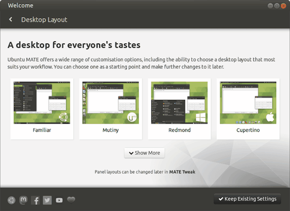
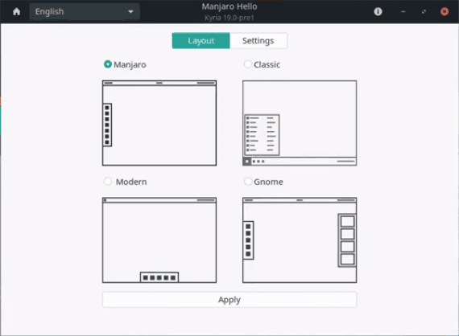
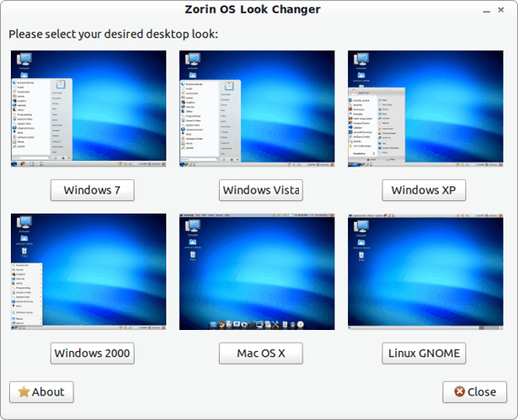

可切換各種作業系統桌面風格的 Linux 發行版
Ubuntu MATE
使用 MATE 桌面環境的 Ubuntu，為 Ubuntu 官方衍生版本之一：
https://ubuntu-mate.org
MATE 是基於 GNOME 2 的衍生，系統需求不高。而 Ubuntu MATE 更進一步往輕量級作業系統發展，老舊電腦和樹莓派（Raspberry Pi）等硬體效能不高的設備都能使用。

Manjaro GNOME
使用 GNOME 3 桌面環境的 Manjaro，為 Manjaro 官方衍生版本之一：
https://manjaro.org/downloads/official/gnome/
徹底發揮硬體效能來展現 GNOME 3 魅力的 Linux 發行版，所以比較重量級，電腦配備不能太差。

Zorin OS
基於 Ubuntu 的 Linux 發行版，以仿造 Windows 操作體驗為特色：
https://zorinos.com
做為能替代 Windows 的 Linux 作業系統，Zorin OS 在驅動程式部分也下了功夫，可以更順暢玩遊戲，尤其在 Steam 平台有很好的體驗！
